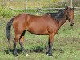
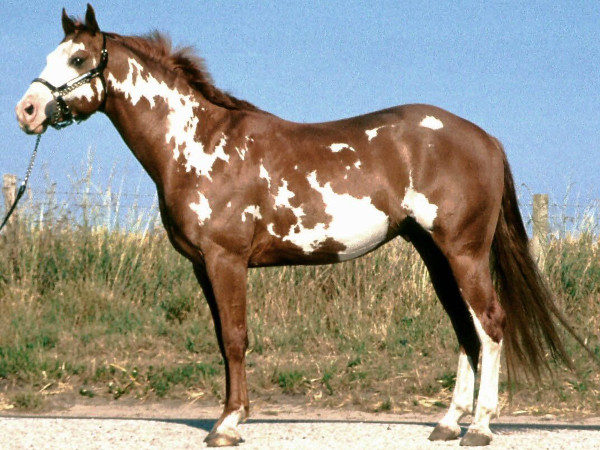
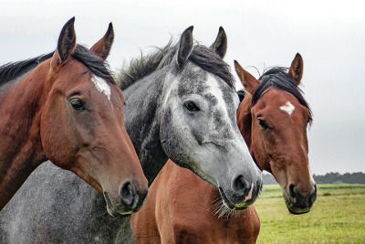

Breeds
Horse breeds are groups of horses with distinctive characteristics that are transmitted consistently to their offspring, such as conformation, color, performance ability, or disposition. These inherited traits result from a combination of natural crosses and artificial selection methods. Horses have been selectively bred since their domestication. An early example of people who practiced selective horse breeding were the Bedouin, who had a reputation for careful practices, keeping extensive pedigrees of their Arabian horses and placing great value upon pure bloodlines. These pedigrees were originally transmitted via an oral tradition. In the 14th century, Carthusian monks of southern Spain kept meticulous pedigrees of bloodstock lineages still found today in the Andalusian horse.
Popular Horse Breeds
Click on small image to see enlarged view.
Arabian
Quarter Horse
Pinto Horse
Horsing Around
Click on the image below and watch the horses spin upside down.
